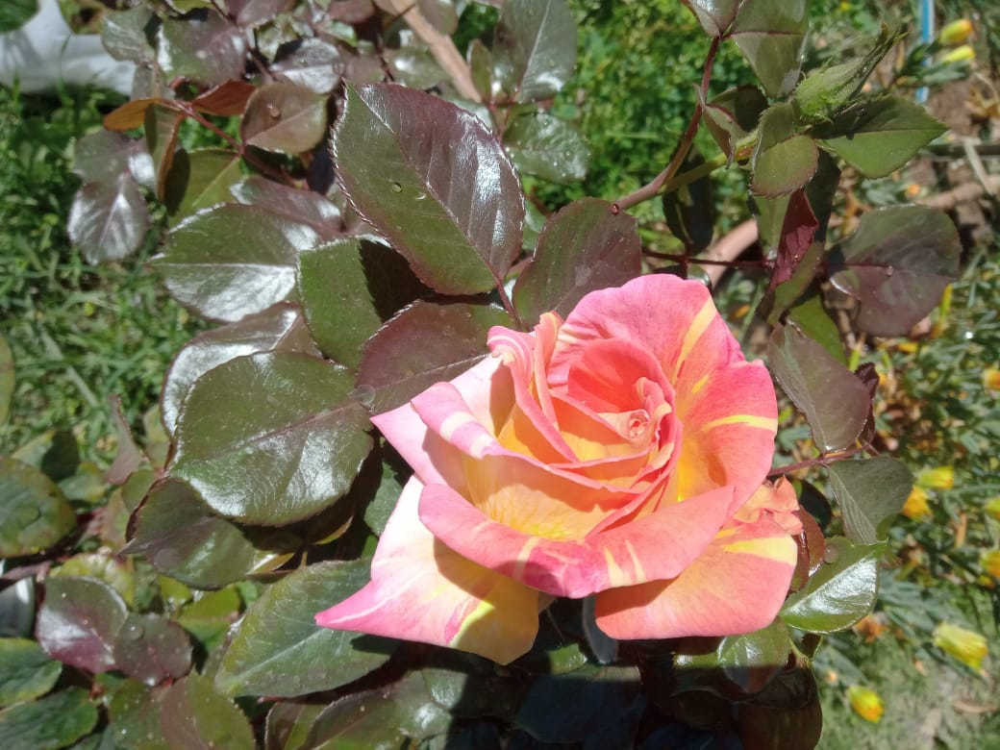
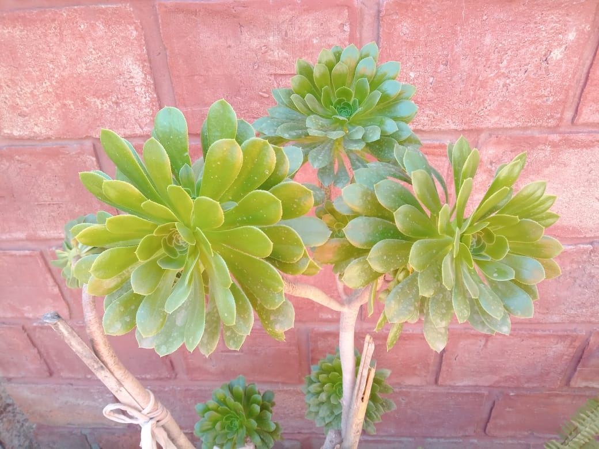
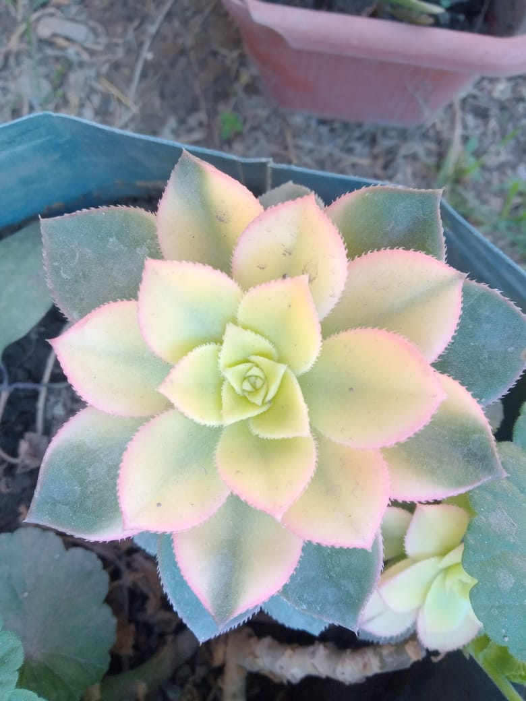
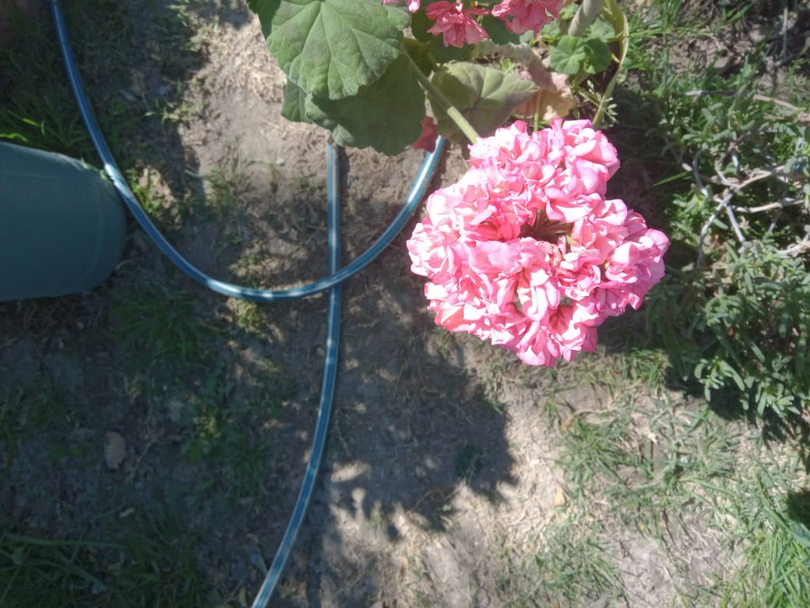
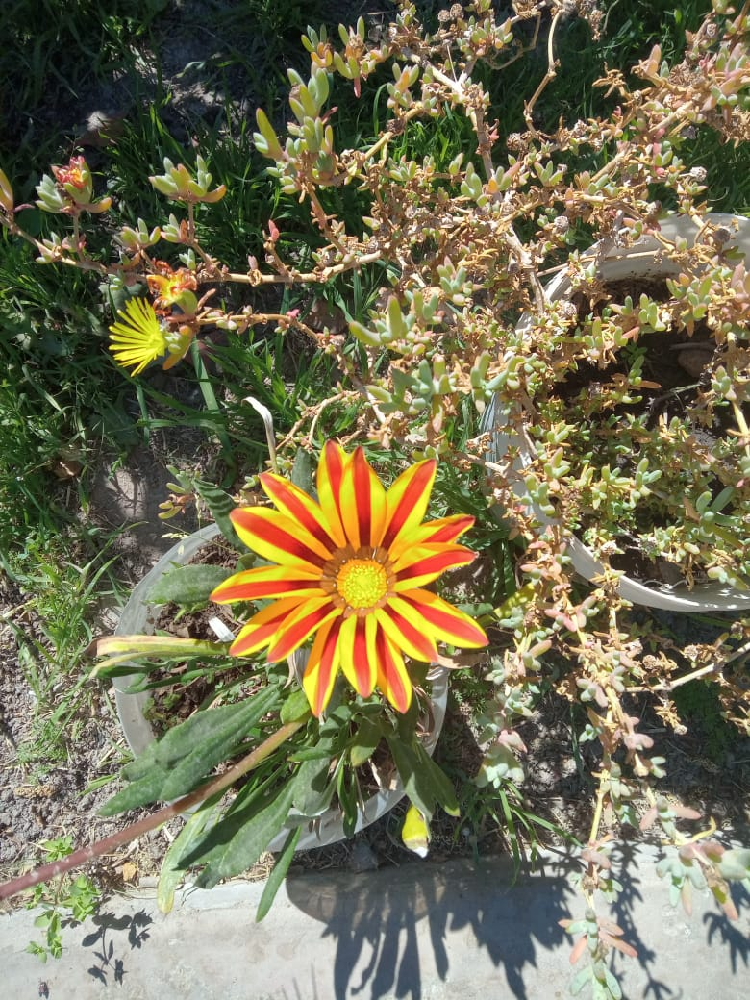

Flores
Historia de las flores. LOS ORÍGENES DE LA CULTURA FLORAL. En un principio las plantas únicamente cubren las necesidades alimenticias de los hombres. Las flores comienzan a ser usadas por el hombre, como símbolos por primera vez: para ofrendas y ritos, en los cultos fúnebres y como amuletos unos 7.000 años antes de Cristo.
Azalea
Son los arbustos de flores del género Rhododendron, especialmente las antiguas variedades Tsutsuji (siempreverde) y Pentanthera (caduca). Florecen en primavera, y a menudo sus flores duran varias semanas. Toleran la sombra, y prefieren vivir cerca o debajo de los árboles.
Rosal
El híbrido de té es uno de los portes más populares y conocidos en todo el mundo tanto en arte floral como para decorar jardines. Este tipo de porte es uno de los mas comercializados. Si tienes un rosal en tu jardín, es muy posible que sea un híbrido de té. Todos los híbridos de té son variedades modernas, es decir, creadas voluntariamente por el ser humano.
Aeonium arboreum
Es una especie de planta tropical con hojas suculentas perteneciente al género Aeonium en la familia Crassulaceae. La mayoría de las plantas de los viveros que se venden como "Aeonium arboreum" son probablemente híbridos, distintos de las pocas poblaciones de la costa atlántica marroquí, para lo cual Aeonium korneliuslemsii es, probablemente, su nombre válido.
Graptopetalum paraguayense
Graptopetalum paraguayense (N.E.Br.) E.Walther, también conocida como graptopétalo, Sedum weinbergii, planta madre perla o planta fantasma, es una planta suculenta del género Graptopetalum, nativa de México.
Rosa de Damasco
Es una rosa híbrida, derivada de Rosa gallica y Rosa moschata.1 Posteriores análisis de ADN han demostrado que una tercera especie, Rosa fedtschenkoana, se asocia con la rosa de Damasco.
Gazania rigens
Gazania rigens es una especie de planta herbácea perteneciente a la familia Asteraceae. Es originaria de Sudáfrica y Mozambique. Se ha naturalizado en otras partes del mundo y se cultiva como planta ornamental.